실험은 이렇게 했어요
요즘 Claude Opus 5.5는 그림 파일 하나 없이 코드만으로 영상 화면을 그려요. 발표자는 영상을 더 잘 만들게 도와주는 오픈소스 스킬 8개를 골라, 말로 설명하는 대신 같은 주제를 하나씩 맡겨 봤어요.
화면 위쪽에 주제가 적혀 있어요. '우리 몸은 별에서 왔다'를 15초로 만드는 과제예요. 아래 선반의 병 아홉 개는 참가자예요. 맨 왼쪽 병이 '스킬 없음', 나머지 여덟 개가 스킬이에요.
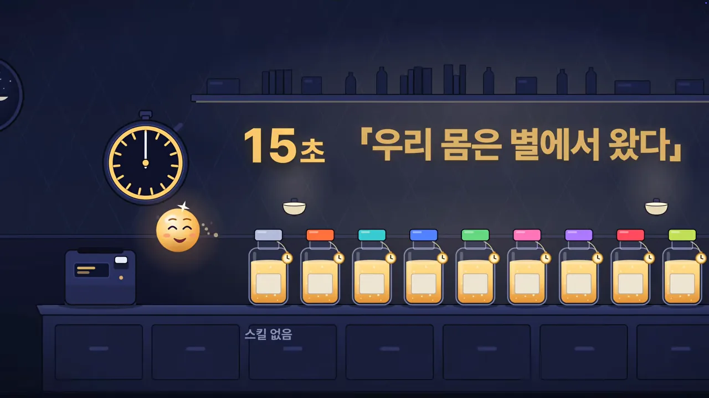
공정하게 비교하려고 조건을 똑같이 걸었어요.
- 화면에 넣을 문장 네 줄을 모두에게 똑같이 줬어요.
- 그림도 소리도 전부 코드로만 만들어요. 이미지나 영상을 만드는 AI(Artificial Intelligence)는 아예 쓰지 않았어요.
- 사람은 중간에 끼어들지 않아요. 스킬이 묻는 질문도 모델이 알아서 정해요.
- 모델은 모두 Opus 5.5이고, 시간 제한은 두지 않았어요.
오른쪽 코드 판 아래에 '이미지 생성 AI', '영상 생성 AI' 표가 붙어 있어요. 이 둘을 빼고 코드만 쓴다는 뜻이에요. 왼쪽 말풍선 '스타일은?', '언어는?'에는 체크가 돼 있어요. 스킬이 던지는 이런 질문에 모델이 스스로 답했다는 표시예요.
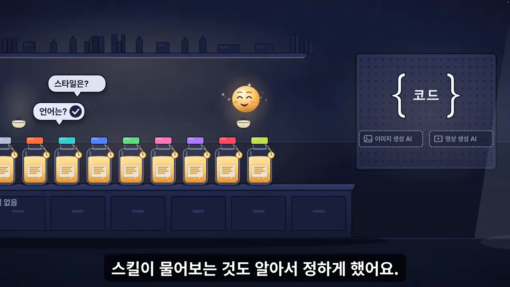
스킬 없이 만든 기준 영상
먼저 스킬 없이 Opus 5.5에게만 맡겼어요. 이젤 위 화면에 빛 입자가 하얗게 터지는 장면이 나왔어요. 발표자는 스킬이 없어도 이 정도는 나온다며 이걸 기준으로 삼아요. 31분이 걸렸고 화면을 18번 확인했어요. API 요금은 기록이 없어요.
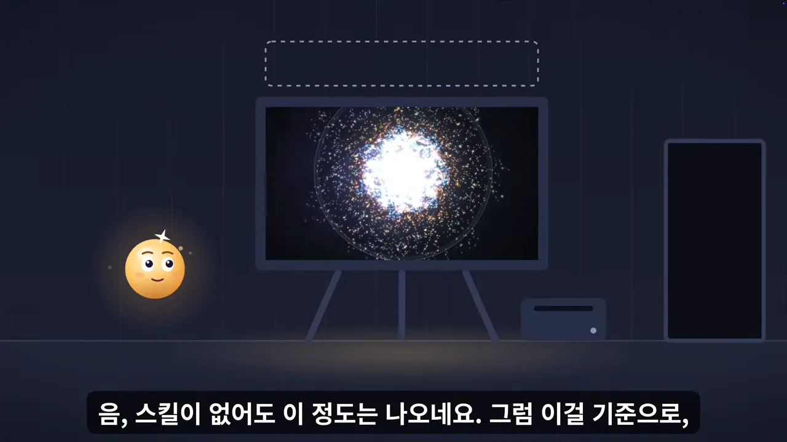
스타일을 고르는 스킬과 단계마다 확인하는 스킬
첫 세 스킬 중 lemo-opuscar와 mg-styles-15는 미리 만들어 둔 스타일 목록에서 하나를 고르는 방식이에요. animate는 단계마다 확인을 받으며 그림책을 만들어요.
1. lemo-opuscar — 스타일 59가지 라이브러리
lemo-opuscar는 영상 스타일 59가지를 모아 둔 라이브러리예요. 화면의 칸마다 스타일 하나와 이름표가 붙어 있어요. impasto, woodcut, engraving, ukiyoe, blueprint 같은 이름이 보여요. 스타일마다 데모 영상이 있어서 마음에 드는 걸 고르면 그 화풍으로 만들어 줘요. 연출 가이드(DIRECTOR.md)와 제작 기법(TECHNIQUE.md) 문서도 들어 있어서, 발표자는 작은 스튜디오를 통째로 빌린 느낌이라고 해요.
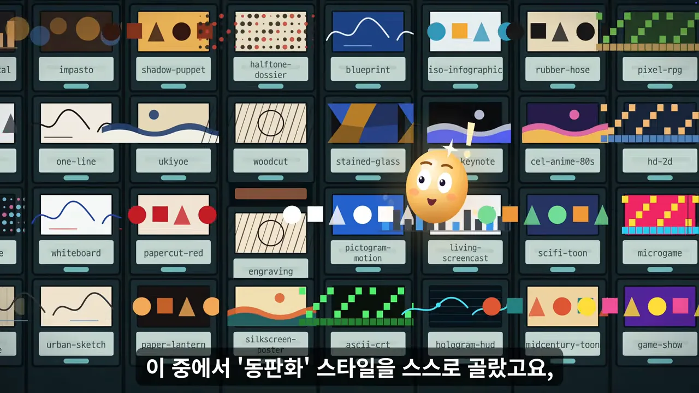
결과물은 누런 종이 위에 가는 선을 겹쳐 새긴 판화 그림이에요. 가운데 별의 중심을 동심원 선으로 새겼고, 아래에 '별의 중심에서 탄소와 산소가 만들어졌다'는 문장이 들어가요.
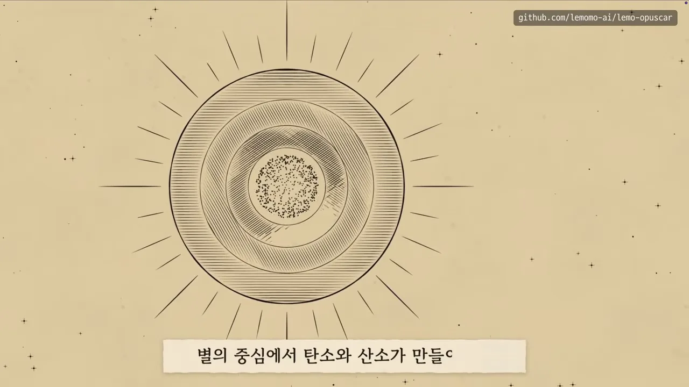
2. animate — 단계마다 확인받는 손그림
animate는 캔버스 하나에 그림을 그려 애니메이션을 만드는 스킬이에요. 이야기, 그림체, 스토리보드를 단계마다 확인받으면서 만드는 게 특징이에요. 화면의 두 아치가 그 확인 단계예요. 왼쪽 '그림체(look check)'에는 체크가 붙었고, 오른쪽 '스토리보드(storyboard check)'는 아직 물음표예요.
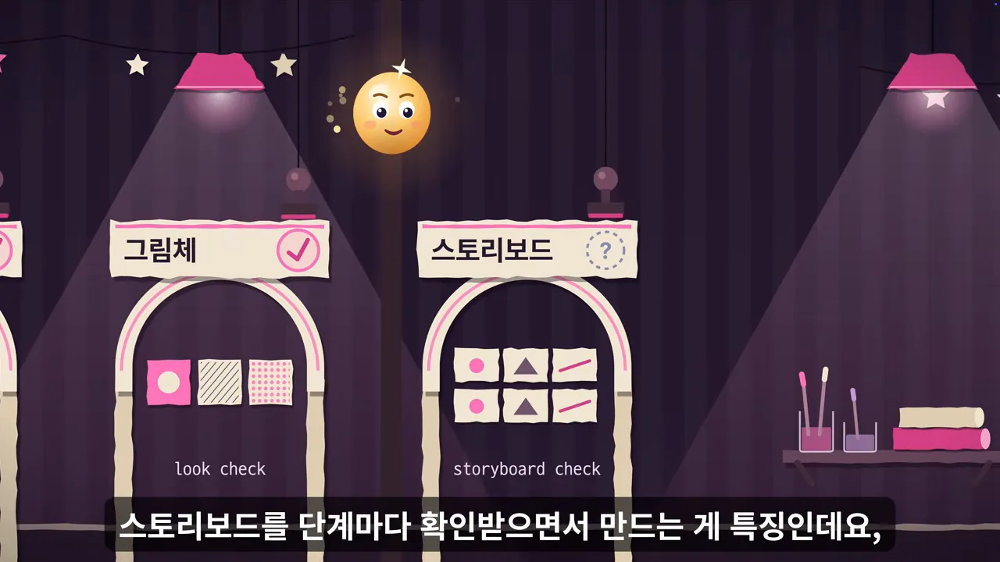
그림체는 종이를 오려 붙인 그림책 스타일을 골랐어요. 화면에 넣을 문장이 사실인지 웹 검색으로 확인하는 단계도 거쳤어요. 영상에는 triple-alpha process, human body composition, supernova core collapse 세 검색어에 체크가 붙은 장면이 나와요.
완성본에서는 종이를 오린 노란 별과 주황색 불가사리 모양이 보라색 종이 위에 붙어 있어요. 가장자리에 종이 결이 남아 있고, 손글씨체 자막이 들어가요. 발표자는 이 부분이 꽤 귀엽게 나왔다고 해요.
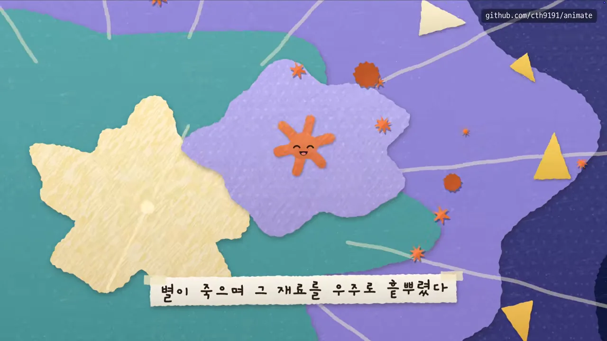
3. mg-styles-15 — 프롬프트와 코드가 공개된 15가지 스타일
mg-styles-15는 이름처럼 모션그래픽 스타일 15가지를 정리한 프로젝트예요. lemo-opuscar처럼 스타일을 고르는 방식이지만, 스타일마다 프롬프트와 소스 코드가 전부 공개돼 있어요. 화면 왼쪽 문서가 프롬프트예요. Style, Output(exactly 10.00 s), Suggested technical route, Creative seed, Signature features 항목으로 나뉘어 있어요. 오른쪽에는 소스 파일 index.html, audio.py, cues.json이 보여요.
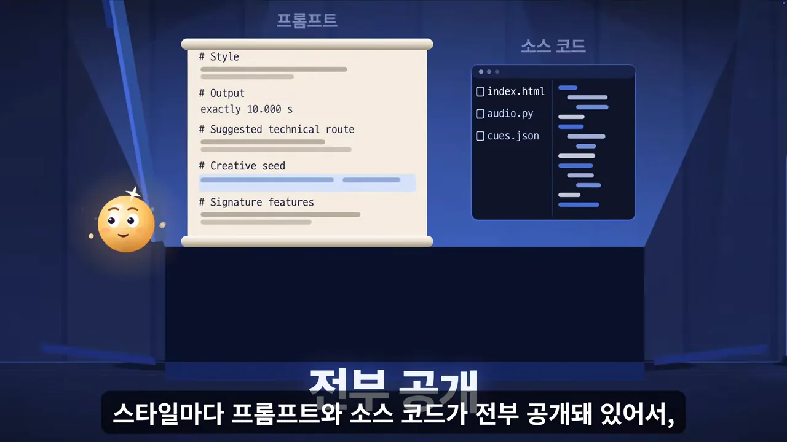
모델은 15개를 쭉 훑어본 뒤 '형태 변형(Shape Morph)'을 골랐어요. 화면 아래 목록에서 3D Render와 Sticker Explainer 사이의 Shape Morph가 선택돼 있어요. 모양이 계속 바뀌며 이야기를 이어 가는 스타일이에요.
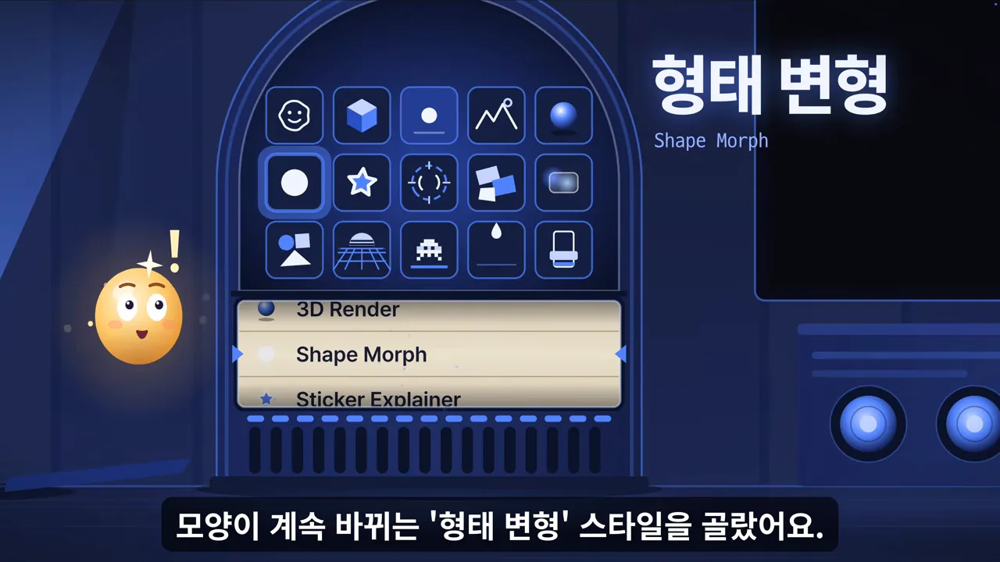
배경음악도 코드로 만들어요
mg-styles-15 결과물은 배경음악도 좋았는데, 이 음악이 전부 코드로 만든 소리예요. 원리는 단순해요. 소리는 공기의 떨림이에요. 떨림의 높낮이를 1초에 48,000번 숫자로 계산해 이어 붙이면 그게 소리가 돼요. 화면 왼쪽 위의 'SR = 48000'이 바로 이 숫자예요. 오른쪽 곡선은 그렇게 계산한 떨림을 그린 거예요.
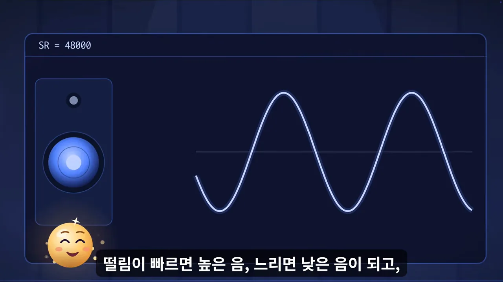
아래에서 이 규칙을 직접 바꿔 볼 수 있어요. 숫자 48,000개를 1초 동안 계산해 소리를 만드는 방식은 영상과 같아요. 떨림 빠르기의 범위는 실험을 위해 정한 값이에요.
- 빠르기를 220에서 440으로 올려 보세요. 같은 구간에 떨림이 두 배로 늘고, 들어 보면 음이 높아져요. 떨림이 빠르면 높은 음이라는 설명 그대로예요.
- 빠르기는 그대로 두고 모양만 사각파로 바꿔 보세요. 음 높이는 같은데 소리 색깔이 거칠어져요. 모양을 바꾸면 악기 소리가 달라진다는 뜻이에요.
- 그래프 아래 숫자를 보세요. 1/100초를 그리는 데도 숫자가 480개 들어가요. 1초면 48,000개예요.
이렇게 만든 소리를 박자에 맞춰 차곡차곡 쌓아 전자음악 한 곡을 짰어요. 화면은 120 BPM(Beats Per Minute) 악보예요. kick, snare, hat, chord, bass, pluck 여섯 줄에 파란 칸이 박자마다 찍혀 있어요. 맨 아래 별·사람 모양 표시는 도형이 바뀌는 순간이에요. 그 순간마다 효과음을 딱 맞춰 넣었어요.
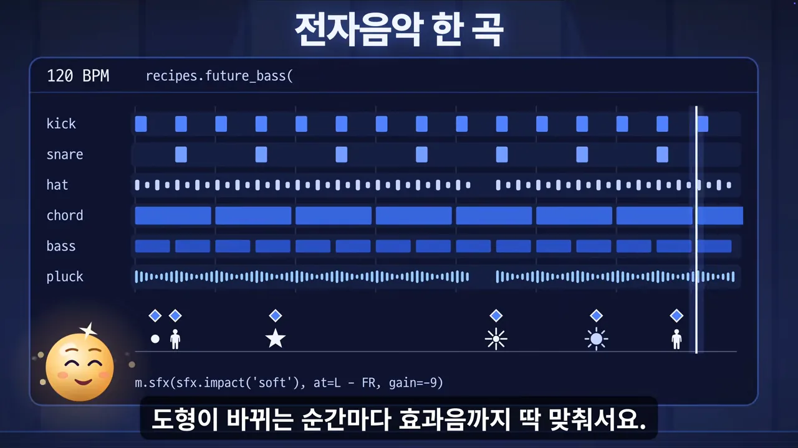
출시 영상 스킬과 손그림 틀
네 번째와 다섯 번째 스킬은 용도가 분명해요. brag은 출시 영상을 만드는 스킬이고, ClaudeAnimationBase는 손그림 캐릭터 애니메이션의 기본 틀이에요.
4. brag — 프로젝트를 출시 영상으로
brag은 깃허브 별을 17,000개 넘게 받은 스킬이에요. 이름 그대로 '자랑'하는 스킬이에요. 원래는 내가 만든 프로젝트를 20초짜리 출시 영상으로 바꿔 줘요. 화면 위쪽에 '한 번에'라는 제목 아래 음악, 공유 문구(share-copy.txt), 영상 세 가지가 나란히 있어요. 명령(/brag) 하나로 이 셋을 함께 만들어 준다는 뜻이에요.
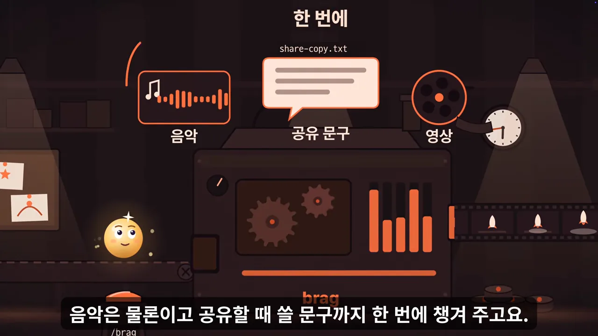
이번 주제로 brag이 고른 장면은 빛 알갱이 4,200개가 사람과 별 사이를 오가는 장면이었어요. 화면 왼쪽 위의 큰 숫자 4,200이 그 알갱이 수예요. 가운데 사람 모양이 그 알갱이로 이뤄져 있어요.
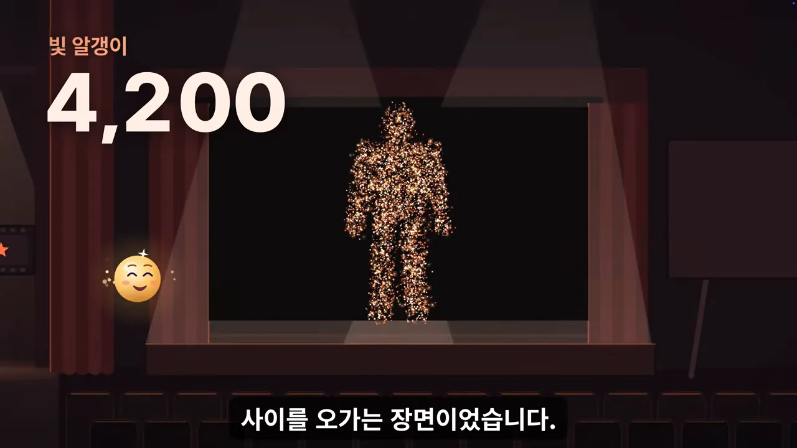
홍보 영상 스킬답게 공유 문구와 포스터도 따로 나왔어요. 화면 위 말풍선이 share-copy.txt의 첫 줄 '몸무게의 65%는 산소, …'예요. 오른쪽 아래 영수증은 brag의 기록이에요. 제작 32분, API 요금 5.5달러, 화면 확인 19번이에요.
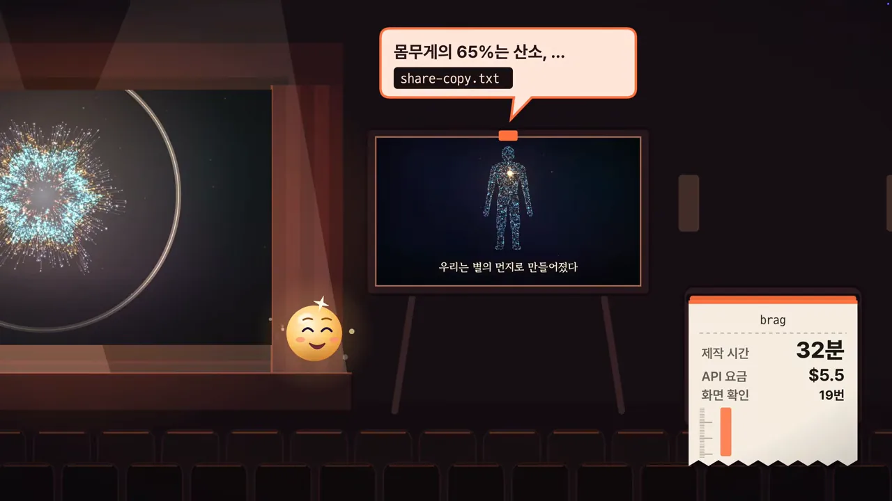
5. ClaudeAnimationBase — 붓으로 칠한 손그림 틀
ClaudeAnimationBase는 결이 조금 달라요. 붓으로 그린 듯한 손그림 애니메이션을 만드는 기본 틀이에요. 틀에는 기본 캐릭터 하나가 들어 있고, 감정 표현이 31가지나 돼요. 모델이 읽고 따르는 연출 규칙도 함께 들어 있어요. 화면 왼쪽 책장의 ANIMATION_GUIDE.md가 그 규칙 문서예요.
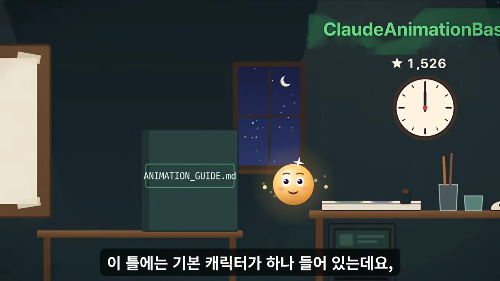
이번 실험 환경에는 GPU가 없었어요. 그래서 붓 질감을 그리느라 1시간 49분이 걸렸어요. 다른 작품들의 세 배쯤 되는 시간이에요. 대신 결과물은 손으로 칠한 듯한 수채화 질감이 확실히 달라요. 아래 장면은 별의 중심을 주황색 붓 터치로 겹겹이 칠한 모습이에요.
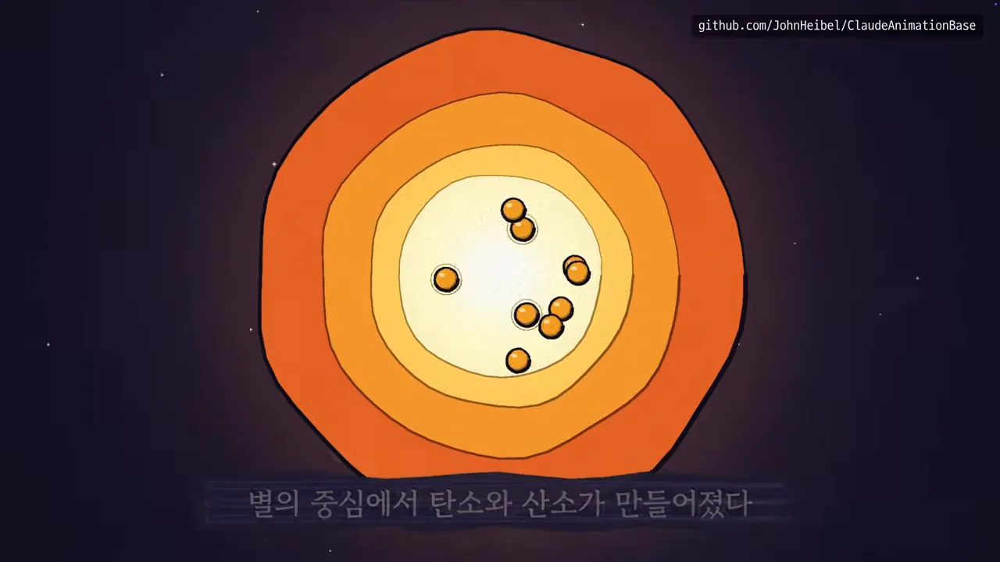
이 틀의 기본 캐릭터는 Claude Code의 마스코트예요. 그래서 발표자는 다른 캐릭터를 따로 만들어 바꿔 넣었어요. 화면의 파란 물방울 캐릭터가 새로 만든 '별먼지 방울'이에요. 별이 뜬 밤 언덕 위에서 '우리는 별의 먼지로 만들어졌다'는 문장과 함께 나와요.
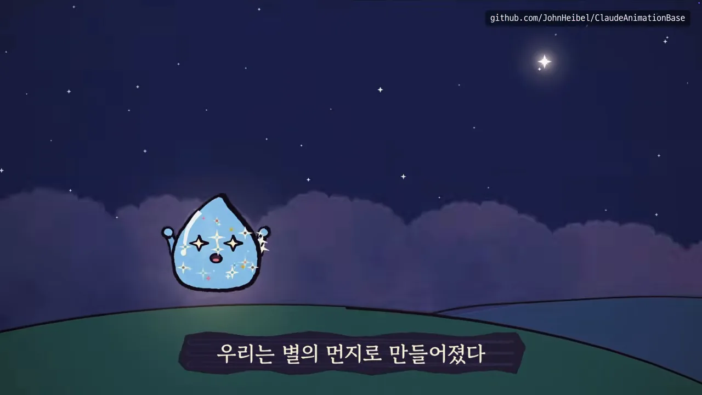
설명형 모션그래픽 세 가지
마지막 세 스킬은 깔끔한 설명형 모션그래픽에 강해요. 셋 다 스타일을 고르게 하지는 않지만, 영상을 짜는 방식이 저마다 달라요.
6. motion-graphics — 끊기지 않는 원테이크 설명
motion-graphics는 설명 영상, 효과음 같은 스킬 6개를 한데 묶은 프로젝트예요. 화면 목록에 motion-broll, object-separation, explainer-high-energy, explainer-default, explainer-engaging, sound-effects가 차례로 있어요. 이번에는 한 요소가 끊기지 않고 이야기를 따라가는 원테이크 설명 스킬을 골랐어요. 목록에서 강조된 줄은 explainer-engaging이에요.
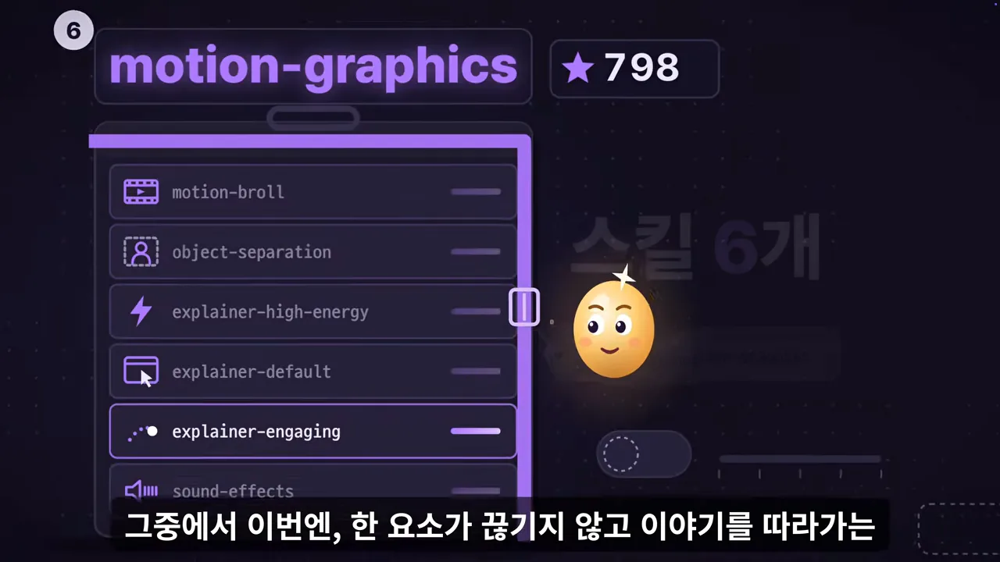
원테이크로 따라간 이야기는 수소 원자 하나의 여행이에요. 빅뱅에서 생긴 수소 원자가 별 속에서 산소가 되고, 지구를 지나 사람 몸까지 가요. 화면에는 빅뱅, 별, 지구, 몸이 점선 하나로 이어져 있어요.
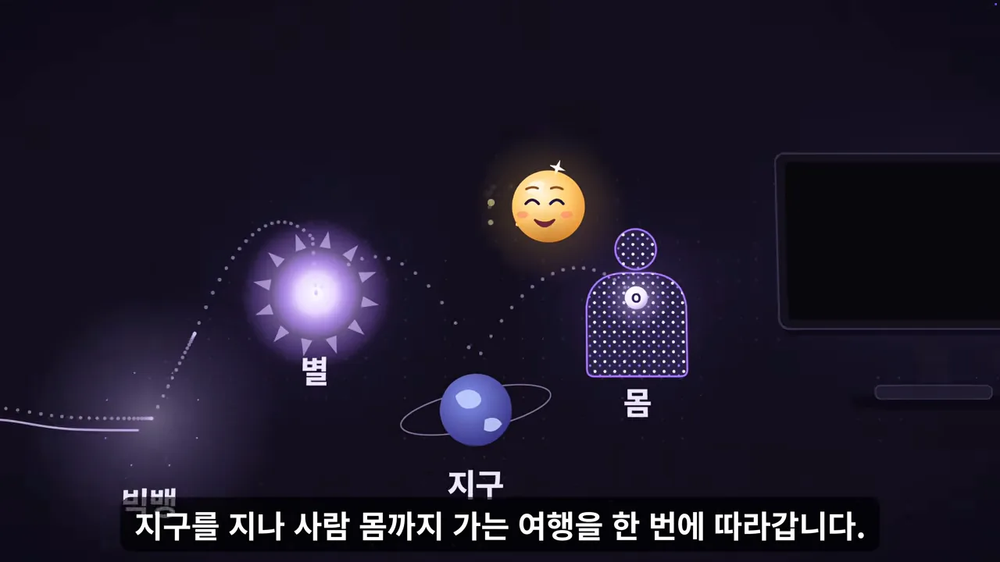
7. bang-motion — HTML 한 파일로 나오는 모션그래픽
bang-motion은 결과물이 HTML(HyperText Markup Language) 파일 하나로 나와요. 이 스킬은 '슬라이드 말고 영상처럼'이라는 규칙을 모델이 스스로 점검하게 해 놨어요. 설명서가 인도네시아어로 쓰여 있어서, Claude도 인도네시아어로 생각하면서 작업했어요. 완성본에서는 여러 색 빛 알갱이가 모여 사람 모양을 이뤄요.
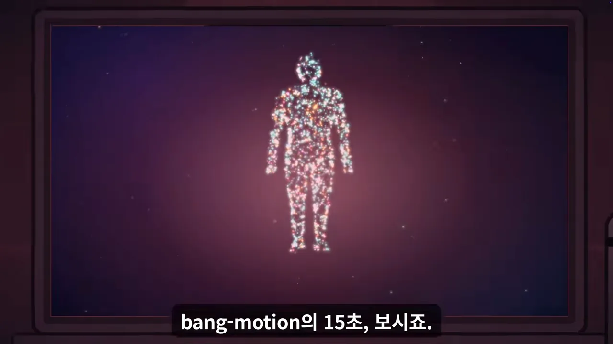
발표자가 가장 돋보인다고 꼽은 건 타이포그래피예요. 아래 장면에서 '우리는 별의 먼지로 만들어졌다'가 한 글자씩 써지는 중이에요. 글자 간격이 아직 벌어져 있는 게 그 흔적이에요.

8. claude-motion-design — 시간 함수 하나와 비평 에이전트
claude-motion-design은 만든 사람이 자기 서비스의 출시 영상을 실제로 이 스킬로 만들었다고 해요. 영상 전체를 시간 함수 하나로 그리고, 음악 박자에 맞춰 컷을 넣는 방식이에요. 화면의 seek(t)가 그 함수예요. 아래 타임라인은 0초부터 15초까지이고, 지금 t = 2.6s 지점의 장면이 칸에 채워져 있어요.
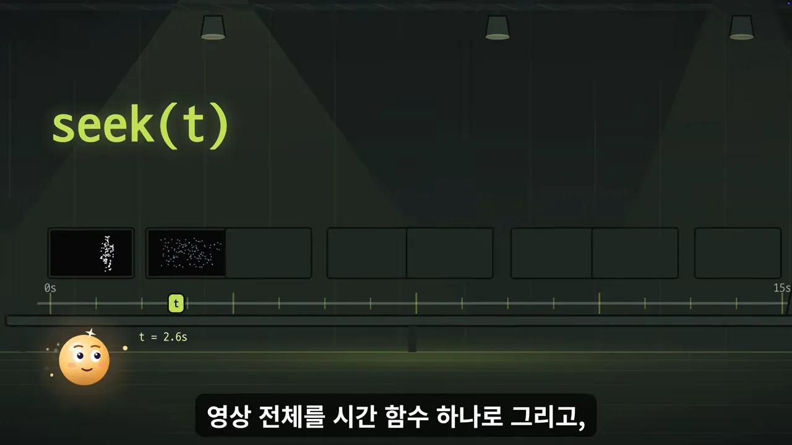
여기서 끝이 아니에요. 다 만든 뒤에는 화면만 보고 평가하는 비평 에이전트를 따로 불러 심사를 받았어요. 화면에서 드론처럼 생긴 카메라가 비평 에이전트예요. 타임라인의 한 장면에 '반려' 도장이 찍혀 있어요. 7.5초 지점에는 'drop' 표시가 있어서, 음악이 터지는 순간에 맞춰 장면을 놓았다는 걸 알 수 있어요.
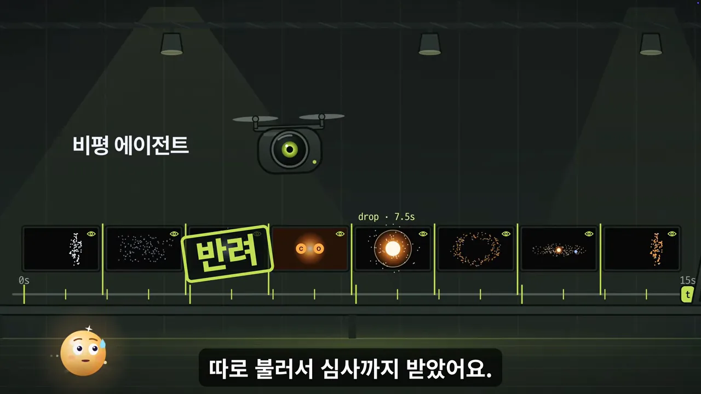
그래서 화면을 확인한 횟수가 59번이에요. 왼쪽 눈 모양 기호 줄들이 다른 작품의 확인 횟수 17~30번이고, 아래 긴 두 줄이 claude-motion-design의 59번이에요. 다른 작품 평균의 두 배가 넘어요. 발표자는 한마디로 가장 꼼꼼했다고 해요.
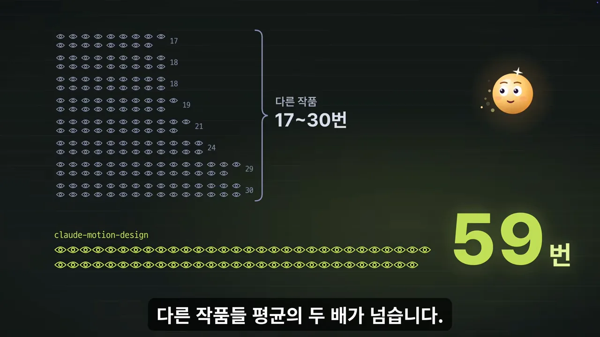
마지막 장면에서는 몸의 90%만 별빛으로 물들어요. 왼쪽 위 90%와, 사람 모양 아래 '수소 10% · 몸무게 기준'이라는 작은 글씨가 그 근거예요. 우리 몸무게의 90% 정도가 별에서 만들어진 원소라서, 그 비율을 그림에 그대로 살린 거예요.
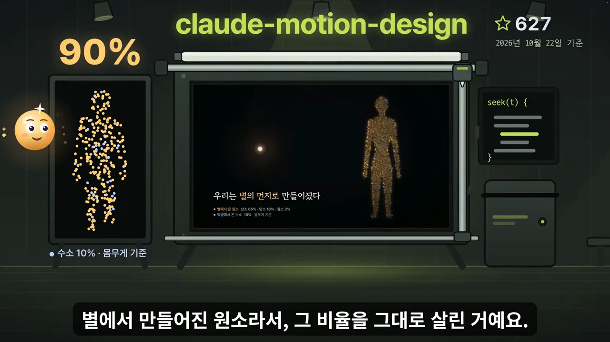
결국 원하는 그림으로 골라요
아홉 편을 나란히 놓으면 한 가지 공통점이 보여요. 스타일을 따로 정해 주지 않으면 빛 입자로 된 사람과 우주로 모이는 경향이 있었어요. 화면 왼쪽 글씨 '빛 입자 · 우주'가 그 묶음이에요. 왼쪽 작품들은 검은 바탕에 빛 알갱이가 흩어진 그림이에요. 오른쪽의 판화(lemo-opuscar), 그림책(animate), 손그림(ClaudeAnimationBase)은 한눈에 봐도 다른 그림이에요.
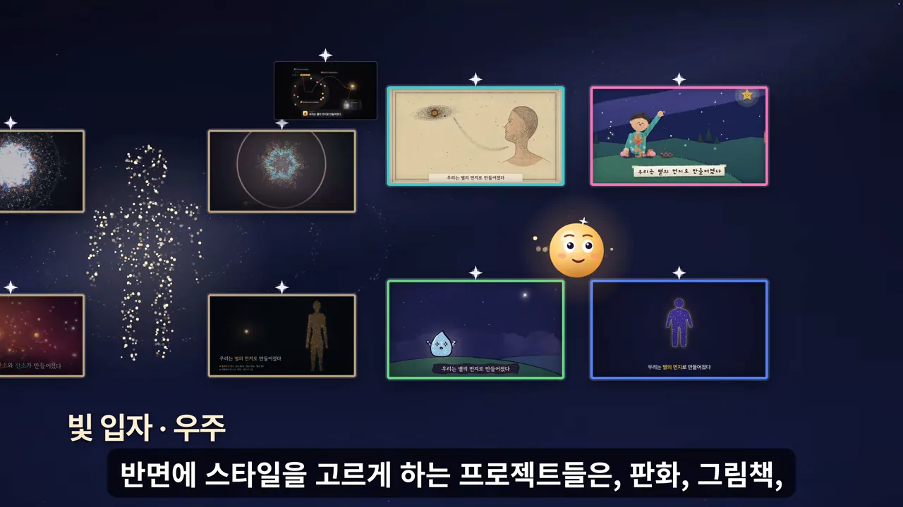
시간과 비용
영상은 아홉 편의 영수증을 한 줄로 걸어 보여 줘요. 영수증이 길수록 오래 걸린 거예요. 맨 오른쪽 ClaudeAnimationBase만 유난히 길고, 나머지는 대부분 30~50분이에요. API 요금은 한 편에 5.5~11.4달러라서, 발표자는 국밥 한 그릇 값 정도라고 해요.
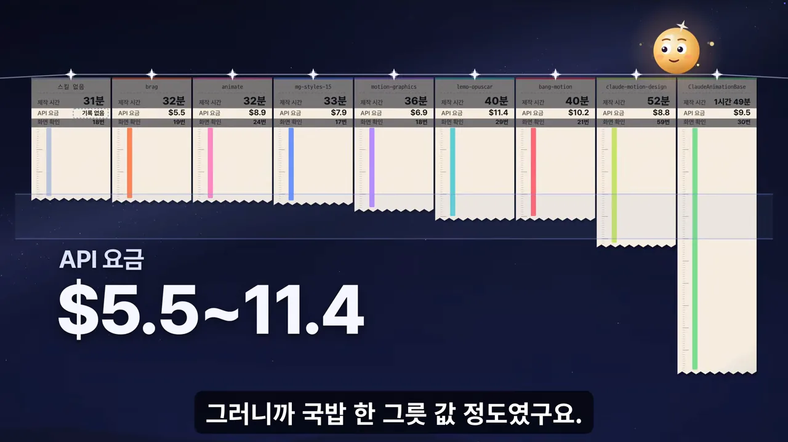
| 스킬 | 제작 시간 | API 요금 | 화면 확인 | 이번에 고른 방식 |
|---|---|---|---|---|
| 스킬 없음 | 31분 | 기록 없음 | 18번 | 빛 입자가 터지는 장면 |
| brag | 32분 | $5.5 | 19번 | 빛 알갱이 4,200개, 공유 문구·포스터 |
| animate | 32분 | $8.9 | 24번 | 종이 오려 붙인 그림책 |
| mg-styles-15 | 33분 | $7.9 | 17번 | 형태 변형(Shape Morph) |
| motion-graphics | 36분 | $6.9 | 18번 | 원테이크 설명 |
| lemo-opuscar | 40분 | $11.4 | 29번 | 동판화 |
| bang-motion | 40분 | $10.2 | 21번 | 한 글자씩 써지는 타이포그래피 |
| claude-motion-design | 52분 | $8.8 | 59번 | 시간 함수 + 비평 에이전트 심사 |
| ClaudeAnimationBase | 1시간 49분 | $9.5 | 30번 | 수채화 붓 터치, 캐릭터 교체 |
요금이 가장 적은 건 brag(5.5달러)이고 가장 많은 건 lemo-opuscar(11.4달러)예요. 시간이 가장 긴 ClaudeAnimationBase는 GPU가 없는 환경 탓이었어요. 화면 확인은 비평 에이전트를 쓴 claude-motion-design이 59번으로 압도적이에요.
무엇을 고를까요
발표자의 결론은 원하는 그림에 따라 고르라는 거예요. 아래 그림은 영상 끝의 이정표 네 개를 한 장에 모은 거예요.
같은 주제, 같은 네 줄로 시작했는데도 스킬에 따라 이렇게 다른 영상이 나왔어요. 스킬이 화풍과 작업 순서를 정해 주기 때문에, 모델이 같아도 결과가 달라져요.